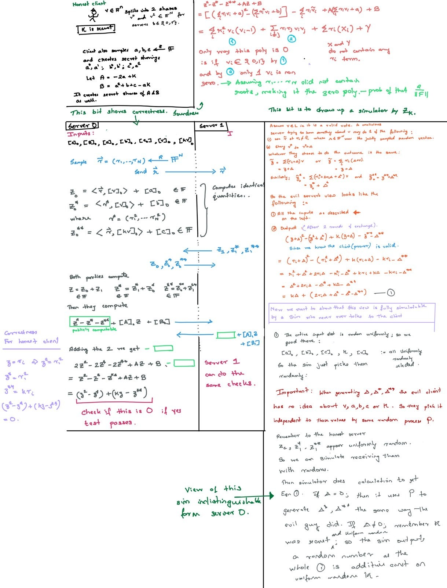

EDIT: Want to change this document to examples of proving protocols are secure
Semi honest adversaries
Given input and and output, can generate the adversaries view of the protocol execution. IMPORTANT: Since all parties follow the protocol, the inputs are well defined. Go back to the ideal world, where \(f_{Ideal}\) receives inputs and outputs the answer. The adversary can see only the input/output of the corrupted parties and the final output and nothing else. He has to attack this world. This adversary is the simulator. We have to show that the simulators view is indistinguishable from that of the real world adversary.

The joint distribution of left and the joint distribution of the right has to look the same. WHY JOINT ?
In semi-honest : correctness, independence of inputs and fairness are non issues because everyone has to follow the protocols.
OLD
Security Models for Multi Party Computation (MPC)
=======Security Models for Multi Party Computation (MPC)
>>>>>>> 3bb8c76905e0e327291ce3c86b3aaa28cc734590Secret Sharing
Informally, \((t,n)\) secret sharing is method by which we split a secret \(s\) into \(n\) shares such that only \(t\) shares are needed to re-construct the secret. Additionally, any combination of \(t-1\) shares reveals no information about \(s\). More formally, it is a pair of algorithms \((Shr, Rec)\) that satisfies the following two properties:
Correctness: Let \(Shr(s) = (s_1, \dots, s_n)\), for \(s \in D\) where \(D\) is the domain of secrets, then \(\forall k \geq t\), we have \(\mathbb{P}\Big[ Rec(s_{i1}, \dots, s_{ik} = s\Big] = 1\)
- Perfect Privacy: Let \(a, b \in D\) and \(Shr(a)|_{k}\) be the projection of the shares \((a_1, \dots, a_n)\) onto a subspace \(D^k\) for \(k < t\). Let \(v=(v_1, \dots, v_k) \in D^k\), then we have \[\begin{align*} \mathbb{P}\Big[ Shr(a)|_{k} = v\Big] &= \mathbb{P}\Big[ Shr(b)|_{k} = v\Big] \end{align*}\]
In other words,\(Shr(a)|_{k}\) and \(Shr(b)|_{k}\) are perfectly indistinguishable. Colloquially we can say that by looking at any \(v\) as defined above, it is impossible to gain any information about the secret : as all values in the domain \(D\) are equally likely to be the secret. The best anyone can do is guess uniformly at random.
Examples
Additive secret sharing and Shamirs secret sharing.
What is MPC ?
Intuitive explanation
What does it mean for a MPC to be secure?
One way to do it would be to enumerate all the properties that we would classify as a violation of security. For example, the adversary should not be able to learn a certain predicate of another party’s input, the adversary should not be able to induce impossible outputs for the honest parties, and the adversary should not be able to make its inputs depend on honest parties’ inputs. Not only is this a tedious approach, but it is cumbersome and error-prone. It is not obvious when the laundry list could be considered complete.– [1]
Alternatively, we could define a perfect/ideal world which has all the nice properties we desire and compare a protocol against this world.
Ideal World
In an ideal world, the parties want to compute a function \(\mathcal{F}\) by sending their private inputs to some trusted incorruptible party \(\mathcal{T}\). Party \(P_i\) has input \(x_i\), which is sent to \(\mathcal{T}\) who outputs \(\mathcal{F}(x_1, \dots, x_n)\). Consider an adversary attacking the ideal world. We call such an adversary the simulator. This simulator is able to take over any parties \(P_i\) but not \(\mathcal{T}\). Therefore, all the simulator is able to view, is their input \(x_i\) and the final output \(\mathcal{F}(x_1,\dots, x_n)\). Thus it must choose their evil inputs, independent of the input of the honest parties.
Real World
In the real world there are no trusted third parties. Instead all parties communicate with each other using a protocol \(\pi\). The protocol \(\pi\) specifies for each party \(P_i\), the next message function \(\pi_i\) – which takes as input the input \(x_i\), the bits of Party \(i\)’s random tape \(r_i\) and all the messages it has received so far. Then \(\pi_i\) outputs either a next message to send along with its destination, or else instructs the party to terminate with some specific output. In the real world, an adversary can corrupt parties—corruption at the beginning of the protocol is equivalent to the original party being an adversary. How they can corrupt parties depends on the trust models described below.
Note: This simulator paradigm is almost identical to the Zero Knowledge proofs for interactive proofs
Trust Models
Passive Security / Honest but curious adversaries / Semi Honest adversary
All 3 names refer to the same model.
A semi-honest adversary is one who corrupts parties but follows the protocol as specified. The corrupt parties run the protocol honestly but they may try to learn as much as possible from the messages they receive from other parties. An adversary may collude with multiple parties, and in that case, the view of the adversary is the combined view of each of the corrupted parties.
The view of a party in the semi honest model is the following:
- The honest input \(x_i\)
- Their random tape \(r_i\)
- All messages received \(z_1, \dots, z_m\)
The view of an adversary is the combined view of all the parties they have corrupted. An attack is anything any efficient (PPT) algorithm can compute using this view. Thus an attack is equivalent to just releasing the view to the public world.
Formal defintion:
More formally, let \(\pi\) be a protocol and \(\mathcal{F}\) be a functionality. Let \(C\) be the set of parties that are corrupted, and let \(Sim\) denote a simulator algorithm. We define the following distributions of random variables:
- Let \(Real_{\pi}(\kappa, C, x_1, \dots, x_n)\) output the ensemble of random variables :
- \(\{V_i: i \in C\}\): The view of the corrupt parties
- \(y_1, \dots, y_n\) : The ouput of the each party
by running protocol \(\pi\) with security parameter \(\kappa\), where each party \(P_i\) acts honestly using following \(\pi_i\). Let \(V_i\) be the view of party \(P_i\) and \(y_i\) be the output of the same party.
- Let \(Ideal_{\mathcal{F}, Sim}(\kappa, C, x_1, \dots, x_n)\) output of ensemble of random variables:
- \(y_1, \dots, y_n\) : The ouput of the each party
- \(Sim(C, \{ (x_i, y_i): i \in C\})\): The view of the corrupt adversary in the ideal model
We say, A protocol \(\pi\) securely realizes \(\mathcal{F}\) in the presence of semi-honest adversaries if there exists a simulator \(Sim\) such that, for every subset of corrupt parties \(C\), \(Ideal_{\mathcal{F}, Sim}(\kappa, C, x_1, \dots, x_n)\) and \(Real_{\pi}(\kappa, C, x_1, \dots, x_n)\) are computationally indistinguishable in terms of \(\kappa\).
NOTE: The defintion includes all the outputs, even those of the honest parties. This is done to enforce correctness, in the case $\(C=\emptyset\). Then we require that the output in the ideal model be indistinguishable from the real model. If \(\mathcal{F}\) is deterministic, this implies correctness. Also note that in the case of passive security, we could just focus on the Views. As no party can deviate from the protocol, we are always guaranteed correctness if \(\pi\) is propertly designed.
Malicious Security
A malicious (also known as active) adversary may instead cause corrupted parties to deviate arbitrarily from the prescribed protocol in an attempt to violate security. A malicious adversary has all the powers of a semi-honest one in analyzing the protocol execution, but may also take any actions it wants during protocol execution. Now there are two things to consider:
Effect on honest outputs: Because this active adversary can send in bad inputs the output of the honest parties might be affected. So when we analyse active security, we must make claims about honest outputs. Systems like Poplar and Prio ignore robustness of output in presence of active adversaries.
Extraction: Earlier we could not change input to \(\mathcal{T}\) even for corrupted parties. In contrast, the input of a malicious party is not well-defined in the real world, which leads to the question of what input should be given to \(\mathcal{T}\) in the ideal world. The answer is we let the ideal world adversary i.e. the simulator also pick the inputs as it wants. This aspect of simulation is called extraction, since the simulator extracts an effective ideal-world input from the real-world adversary that “explains” the input’s real-world effect.
When \(A\) denotes the adversary program, we write \(corrupt(A)\) to denote the set of parties that are corrupted, and use \(corrupt(Sim)\) for the set of parties that are corrupted by the ideal adversary, \(Sim\).
- Let \(Real_{\pi, A}(\kappa, x_i \notin corrupt(A))\) output the ensemble:
- \(\{y_i: i \notin corrupt(A)\}\) *\(\{V_i: i \in corrupt(A)\}\)
by running \(\pi\) on the honest inputs and messages of clients and malicious inputs and messages selected by \(A\). \(V_i\) is the view of party \(P_i\).
- Let \(Ideal_{\mathcal{F}, Sim}(\kappa, x_i \notin corrupt(A))\) first generate \(x_i \in corrupt(A)\), then run \((y_1, \dots, y_n) = \mathcal{F}(x_1, \dots, x_n).\) Then give \(\{y_i: i \in corrupt(A)\}\) to Sim to get the final view set of simulated views. We then output the ensemble
- \(V^*\): This is the view of the corrupt parties plus the corrupt outputs.
- \(\{y_i: i \notin corrupt(Sim)\}\)
We say, A protocol \(\pi\) securely realizes \(\mathcal{F}\) in the presence of active adversaries if there exists a simulator \(Sim\) such that, \(corrupt(Sim) = corrupt(A)\), and for all honest party inputs, \(Ideal_{\mathcal{F}, Sim}(\kappa, x_i \notin corrupt(A))\) and \(Real_{\pi, A}(\kappa, x_i \notin corrupt(A))\) are computationally indistinguishable in terms of \(\kappa\).
Security with Abort
In any real world protocol, one party receives its output before the other. If the first party is evil they can abort and not give the honest client any output at all. Thus our defintions won’t hold as we require the outputs of honest parties be indistinguishable in the ideal world and real world. The ideal world has no such issue of deadlocks. To work around this, there is a weaker notion of security which modifies the ideal \(\mathcal{F}\) as follows: In this model, the outputs are first given to evil parties who can then either deliver or abort. If they deliver things work as before, if they abort, the honest clients are sent a special symbol \(\bot\).
Examples of Simulators
Poplar with at least 1 honest server

Prio with at least 1 honest server
TODO